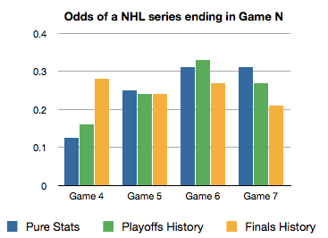

Crunching numbers for the NHL finals
Now that the Vancouver Canucks are in the NHL Finals, a special visit to Vancouver is in order. Unfortunately, the recently posted schedule really sucks. There’s just one weekend game, and the rest are spaced in such a way that I can only hope to see Game 5 (if it happens) and either Game 4 or Game 6 (if it happens) if I manage to work from home half of the week. The question is: which game to choose? I want to be in Vancouver when the Canucks take the cup!
Yay math!
Being super nerdy, I decided to throw math at the problem. Brushing up on probability, I calculated the odds of a series ending at each game (4-7). For a series to end in game 4, one team has to win all four games. The odds of this, given a 50% chance for each team to win, is (1/2)^4. Since there are two teams, multiply by two, resulting in a 1/8 chance. You can do similar calcuations to get the following odds:
p(4) p(5) p(6) p(7)
0.125 0.25 0.3125 0.3125
Based on this distribution, it seems that game 6 is more likely to see the end of the series than game 4, but then I would risk missing a game 4 victory. Arthur Benjamin would be proud of me (unless my numbers are wrong).
A bit of history
Historical data tells a different story. As it turns out, the NHL is really old, dating back to 1927, but the league switched to best-of-7 scoring in 1939. Wikipedia has a great chronology of NHL playoffs, complete with scores and brackets.
I analyzed series scores from all playoff games in the last 25 years (since 1985) by fetching raw wikipedia articles via wget and running them through a [python script]. Older records can also be found on wikipedia, but they are buried inside other pages, in harder to parse formats.
for year in {1985..2011} do
wget -O ${year} "http://en.wikipedia.org/w/index.php?title=${year}_Stanley_Cup_playoffs&action=raw"
done
This yielded the following distribution for playoff games, based on 383 matches:
p(4) p(5) p(6) p(7)
0.16 0.24 0.33 0.27
For finals games only, the distribution is more skewed, probably in part due to a shortage of data (just NN finals games from the wikipedia page), but finals game history is probably a better predictor for finals games than all playoffs games, so this is worthwhile:
p(4) p(5) p(6) p(7)
0.28 0.24 0.27 0.21
Here are all three distributions plotted in a graph:

Analyzing...
The most striking thing about this graph is the huge difference between finals history and stats, especially in the 4 game series scenario. Perhaps some teams just buckle under the pressure, while their opponents remain steadfast. Or this is just a statistically insignificant fluke that can be attributed to having an insufficiently large sample of finals matches.
As expected, the historical distributions are skewed toward the series finishing in Game 4 due to unequal strength between teams. In other words, if one team is stronger than another, then the odds of that team winning each game would be greater, making the series shorter on average.
Decision!
Armed with numbers, I can decide whether to pick Game 4 or Game 6. Here are the odds of seeing the Canucks (yeah yeah, maybe the Bruins) win in games 4 or 5, compared to 5 or 6, as calculated from each of the three methods:
Game 4 or 5 Game 5 or 6
Stats 38% 58%
Playoffs 40% 57%
Finals 52% 51%
Interesting. Given how annoying it would be to miss a Game 4 victory and how favorable the finals history-based odds look, I’ll go for 4 and 5. Now to try to work from home, book flights and bask in Canuck glory!